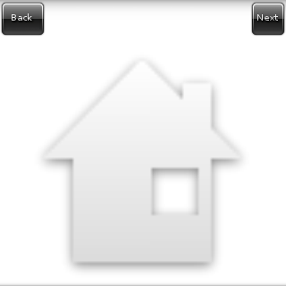

This example shows how one can use the Layout with a predefined theme layout to add a back and next button to a simple window.
The full source code for this example can be found at layout_example_02.c.
After setting up the window and background, we add the layout widget to the window. But instead of using elm_layout_file_set() to load its theme from a custom theme file, we can use elm_layout_theme_set() to load one of the predefined layouts that come with elementary. Particularly on this example, we load the them of class "layout", group "application" and style "content-back-next" (since we want the back and next buttons).
layout, "layout", "application", "content-back-next"))
fprintf(stderr, "Failed to set layout");
#define EVAS_HINT_EXPAND
Use with evas_object_size_hint_weight_set(), evas_object_size_hint_weight_get(), evas_object_size_hin...
Definition: Evas_Common.h:297
Eina_Bool elm_layout_theme_set(Evas_Object *obj, const char *klass, const char *group, const char *style)
Set the edje group from the elementary theme that will be used as layout.
Definition: efl_ui_layout.c:3400
Evas_Object * elm_layout_add(Evas_Object *parent)
Add a new layout to the parent.
Definition: efl_ui_layout.c:3067
void elm_win_resize_object_add(Eo *obj, Evas_Object *subobj)
Add subobj as a resize object of window obj.
Definition: efl_ui_win.c:8997
EVAS_API void evas_object_show(Evas_Object *eo_obj)
Makes the given Evas object visible.
Definition: evas_object_main.c:1814
EVAS_API void evas_object_size_hint_weight_set(Evas_Object *obj, double x, double y)
Sets the hints for an object's weight.
Definition: evas_object_main.c:2638
This default theme contains only a "content" area named "elm.swallow.content", where we can add any widget (it can be even a container widget, like a box, frame, list, or even another layout). Since we just want to show the resulting layout, we add a simple icon to it:
This default layout also provides some signals when the next and prev buttons are clicked. We can register callbacks to them with the elm_object_signal_callback_add() function:
In the Layout - Signals and Size Changed you can see how to send signals to the layout with elm_object_signal_emit().
Now our callback just changes the picture being displayed when one of the buttons are clicked:
static const char *images[] = { "home", "close", "arrow_up", "arrow_down", NULL };
struct _App {
int current;
};
static void
{
struct _App *app = data;
printf("signal received\n");
if (!strcmp("elm,action,back", emission))
app->current--;
else if (!strcmp("elm,action,next", emission))
app->current++;
if (app->current < 0)
app->current = (sizeof(images) / sizeof(images[0])) - 2;
else if (images[app->current] == NULL)
app->current = 0;
#define EINA_UNUSED
Used to indicate that a function parameter is purposely unused.
Definition: eina_types.h:339
Evas_Object * elm_object_part_content_get(const Evas_Object *obj, const char *part)
Get the content on a part of a given container widget.
Definition: elm_main.c:1569
Eina_Bool elm_icon_standard_set(Evas_Object *obj, const char *name)
Set the icon by icon standards names.
Definition: elm_icon.c:885
Efl_Canvas_Object Evas_Object
An Evas Object handle.
Definition: Evas_Common.h:185
}
It's possible to see that it gets the name of the image being shown from the array of image names, going forward on this array when "next" is clicked and backward when "back" is clicked.
A screenshot of this example can be seen on:
